BATTERIES
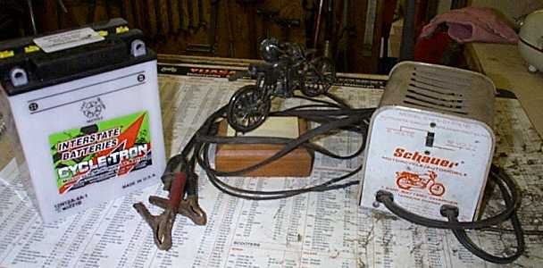
let us therefore cast off the works of darkness,
and let us put on the armour of light."
Romans 13:12
¶ If your battery is dead you definitely have a work of darkness on your hands and a good, charged Battery does give you the armour of light, especially at night.
Motorcycle batteries have one thing in common, they are all too small. Even the biggest ones are too small for what they have to do. These days, it seems as though nobody believes in kick starters anymore, so a well taken care of battery is doubly important.
A battery will loose 1% of its charge per day just sitting there doing nothing. So you can see that you just can't park it, walk away, and come back in 4 or 5 months and expect it to work. Amazingly some of them do work after that kind of abuse, but a greater number of them don't. The cure? Trickle charge the battery at least once a month.
You can also use a maintenance type battery charger. This type of charger has electronic circuits that can detect when a battery is fully charged and cut the charging rate. When the battery charge goes down the maintenance charger senses it and starts charging again. This works very well.
I have found that it is best to use a 1 Amp or smaller trickle charger. Most motorcycle batteries are small and just can't take the high rate of charge that a 6 or 10 Amp charger gives. A general rule of thumb is that a battery should not be charged at more than 1/10 its rated amp capacity. As you can see, even a big motorcycle battery is maxed out by a 2 Amp charger.
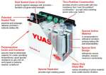 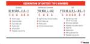
If the electrolyte is below the plates add distilled water till the plates are covered and/or to the top of the fill line. You can use tap water but that may shorten the life of your battery because of impurities in the water. Electrolyte volume expands during recharge and excess may flood over battery covers if you fill above the battery fill line. Always unplug the charger before removing the leads from the battery and keep the battery away from flames and sparks. Remember all that gassing in the battery is producing Oxyhydrogen Gas. This can and will EXPLODE the battery, covering you with acid which will burn you like you will not believe. Baking soda will neutralize battery acid and water will rinse it off and dilute it. Mixing baking soda and water together works great. You can use it anywhere on the bike or yourself to remove and neutralize battery acid. Keep lots of both on hand.
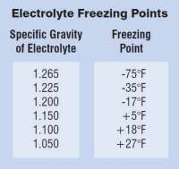
You might also want to make sure the water you use IS NOT salt water. It seems salt water and battery acid combine to make Chlorine Gas which will KILL you. Well, it is going to take a very strong solution of both to make any Chlorine Gas but the possibility of it happening is something to remember!
It's Not My BODY And It Won't Hurt Me At All!
New Lead/Acid Batteries need to be charged for several hours or until they are freely gassing (bubbling), when they are first filled with Battery Acid. If you do not charge them, it could shorten their life in service. It is a good idea to loosen the individual Battery caps and make sure the vent tube is clear. Be sure to retighten the caps before putting the battery into service.
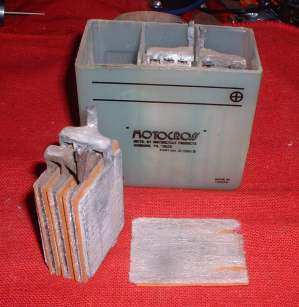 Lead/Acid Battery 1 |
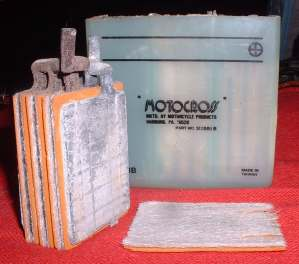 Lead/Acid Battery 2 |
Now-a-days you can get different types of batteries too. They are called all kinds of funny names like AGM, Jell type, GYZ, YTX and the like. These are all sealed type Batteries and you never have to put additional acid into them. They require special charging equipment and/or special charging technique to give them the initial charge. Depending on who you talk to, initial charging of a Sealed Type Battery should be at least 12.8 Volts to activate it but not over to 14.8 volts to prevent overcharging. However, if the Sealed battery had been charged and now has dropped below 11.5 volts and will not take a charge. You will need to charge it at 25 volts for five minutes. If it still will not take a charge, replace it. As you might guess, it is a good idea to keep the instructions that come with these Batteries and follow them. Follow the instructions that is, not the Battery. It would be very boring following the Battery. They never go anywhere interesting.
Some new Sealed Type Batteries come pre-filled and charged from the factory. They have a finite shelf life and must be put into service as soon as possible. If they sit for month or so they must be recharged. Other new sealed type Batteries come dry with a separate strange looking bottle of special high concentrate sulfuric acid. You fill them up with the acid and put on a non removable cap. Then you give them the initial activating charge.
All sealed and conventional Dry Batteries have an indefinite shelf life but only as long as they remain sealed and dry. That is, with the filler caps and red sealing cap or red sealing tape in place. Once the seals are broken or the Battery filled with acid the countdown on Battery life begins. When you remove the red caps you will usually hear a sucking sound as the Battery is unsealed.
If you want to upgrade your conventional Lead/Acid Motorcycle Battery to a Sealed Battery type make sure the stock charging system is capable of charging the battery. You need a regulated output of between 14 to 14.8 Volts. If your charging system cannot maintain that rate of charging it is not powerful enough for a Sealed Type Battery. A Conventional battery will be the only battery option for your motorcycle.
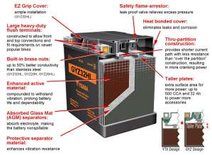 Yuasa GYZ Battery |
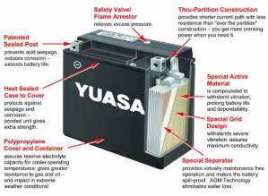 Yuasa AGM Battery |
If a battery is totally discharged, and if you goof and connect the plus and minus leads backwards you can change the polarity of the battery. Plus is minus, minus is plus. I had a customer who did that. That was a fun one till I figured it out. I just drained the battery to zip, recharged it the right way... worked just fine... go figure.
Here is a trick that works maybe 60-70 % of the time...You have a battery that is almost junk, will not hold a charge for very long. Put some Epsom salt, maybe 1/4 teaspoon, in each cell. Sometimes, not always, just sometimes, it will keep it going another 2-3 months. Won't hurt anything... the batteries junk anyway, but it might get you through till winter!
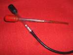
I once worked in a shop that was responsible for a fleet of about 120 trucks and cars. Part of my job was making sure all the batteries were up to snuff on all those vehicles. I did a lot of battery charging, battery changing, checking fluid levels, checking voltages, and the like. I found that a battery could have a good volt reading and be bad. It could also have the right hydrometer reading and be bad. You needed to check both. Even with BOTH volts and hydrometer readings good, I had one or two that just plain would not crank an engine. Put a new battery in and problem solved. Perhaps they were sulfated badly. I could not tell as the cases were all black. This was quite rare. One or two out of hundreds and hundreds.
On motorcycle batteries you can usually look through the cases and see the white gook, Lead Sulfate, on the plates of the Battery. Once you see that Lead Sulfate is forming, that Battery is on it's way out.
Speaking of Lead Sulfate. I once met a guy who told me he could rejuvenate old Batteries. He told me he dumped the old acid, put in a water/baking soda mix, and waited till it stopped bubbling. He then drained the mix out and rinsed it out several times with plain water. Then he refilled the battery with new, fresh Battery Acid and charged the Battery.
Now everything I know about Batteries tells me this will not work. I tried it on an old Battery I had that was on it's way out and it did not work for me. However, get this. I know of several people who had this old guy work their Batteries over and they all reported THAT IT DID WORK. It sure did not for me but there were a lot of people that said it did for them. I never was able to watch him do it sooo who knows??? Just to really confuse you. I once has an old battery that I really needed to work 'cause I was too broke to get a new one. So I drained the old acid out and put new acid in. Nothing else. It charged up just fine and I used it for several more years. Again, go figure!
Remember too. On old British bikes, like Triumph, BSA, Norton, etc. They used a POSITIVE GROUND electrical system. It would behoove you to remember this if you have to work on one!
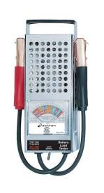 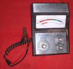
One last thought on Batteries. All of today's motorcycle engines have Electronic Ignition. A lot of these Ignitions require a full 12 volts to fire the spark plugs. It is possible to have enough amps in a weak Battery to turn the starter but NOT enough Volts to fire the Ignition System. So if it cranks but does not start and everything else seems good, test the Battery.
A good, fully charged Battery is needed for a lot of things on a motorcycle. It is indeed the armour of light.
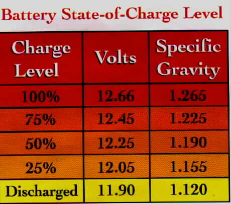
For a PDF file to print out a State of charge chart, Click 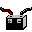 For size and applications for Yuasa batteries in PDF, Click
For more information, theory, lots of good stuff from Yuasa in PDF, Click For a number of handy PDF files on various battery related procedures, right from the horses mouth so to speak, Check out this handy page from Exide Batteries, Click
Battery Council International, Click
Here is a Zip file with a lot of Info on all types of Vehicle batteries, Click (800 KB)
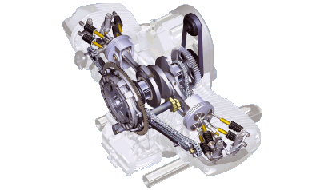 |
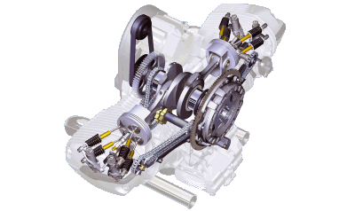 |
Copyright © 1999-2015 dansmc.com. All rights reserved.